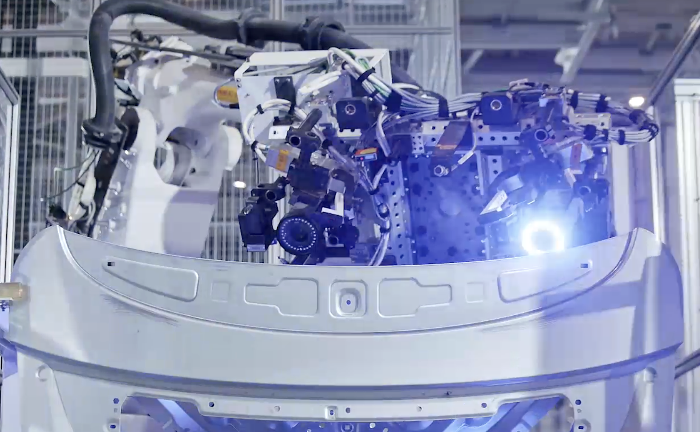
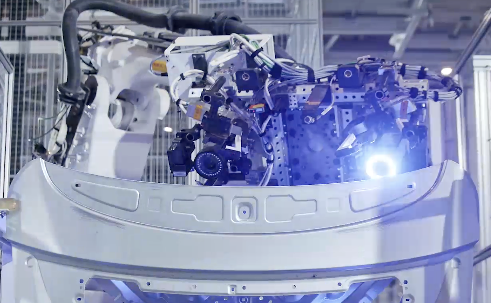
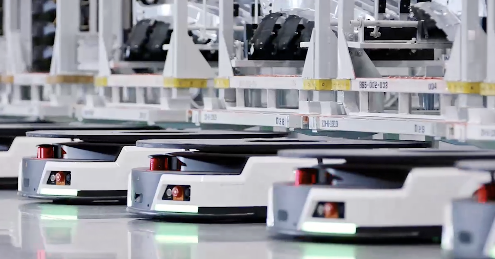
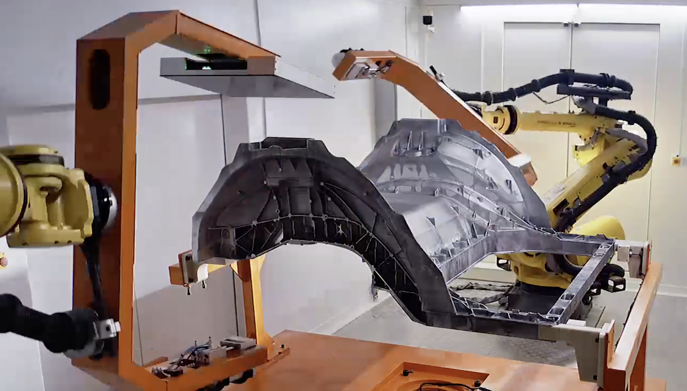
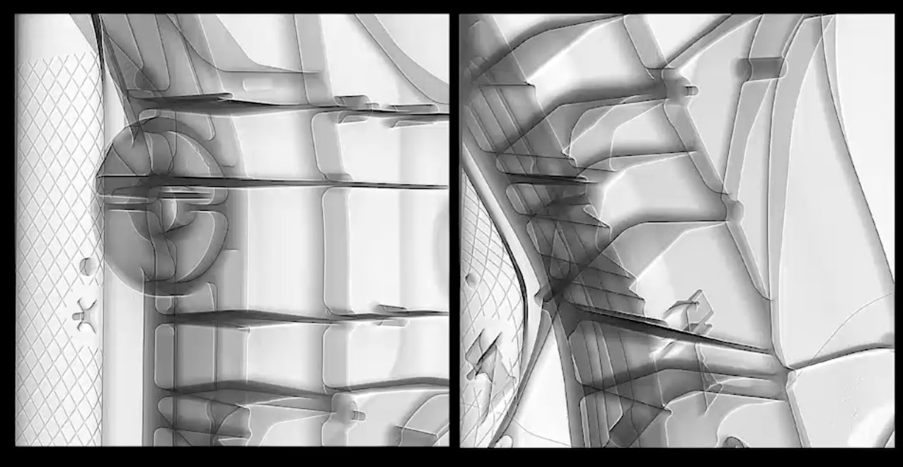

小米汽车生产线的三大优势
1. 自动化与智能化:
- (1) 超高机器人密度: 在焊装车间，自动化率普遍超过 95%。
 

- (2) 全程自动化物流: 由 AGV(自动导引运输车)、EMS(空中输送系统)和 robotic carriers (机器人搬运车)完成。

- (3) 自动化质量检测: 广泛应用机器视觉系统进行自动质量检查。
 
2. 效率
- (1) 惊人生产节奏: 每 76 秒下线一辆车，日产量为 1000 辆这个速度使得小米能够在230天内完成10万辆车的下线，创下了新车企的最快纪录。
- (2) 高效工艺技术: 传统制造工艺下需要焊接 72 个部件才能完成的大模块，在压铸工艺下只需一次压铸即可完成，生产时间缩短近一半。
- (3) 快速换线能力: 凭借标准化、模块化设计，小米智能工厂极大提高了产线柔性，可实现快速换线生产。
3. 绿色环保实践
- (1) 节能减排: 房顶铺设光伏板，年绿色发电 1640 万度。小米泰坦合金含 30%循环铝。
- (2) 资源循环利用: 涂装车间废气处理率 99%，污水回收处理系统循环利用水资源。
- (3) 绿色工艺: 采用一体化压铸技术减少了生产过程中的焊点数量和工时, 不仅提高了生产效率，也降低了能源消耗。
Part2 燃油 vs 电动
| 燃油汽车 | 电动汽车 | |
|---|---|---|
| 能源效率 | 能源效率低 (30-40%) | 能源效率高 (>85%) |
| 环境影响 | 排放温室气体和污染物 | 零排放 |
| 能源补充效率 | 加油仅需5分钟 | 快充仍需 30+ 分钟 |
| 续航 | 续航稳定 | 续航受环境影响，可能衰减 |
| 运行成本 | 油费高 | 电费低 |
| 购买成本 | 技术成熟, 成本低 | 电池成本高 |
| 载重 | 燃油轻便, 适合重载长途 | 电池重, 影响有效载重 |
Part3 电动汽车电池
详细性能参数对比表
| 对比维度 | 三元锂电池 (NMC/NCA) | 磷酸铁锂电池 (LFP) | 固态电池 | 钠离子电池 | 氢燃料电池 |
|---|---|---|---|---|---|
| 质量能量密度 (Wh/kg) | 较高: 200-300 | 中等: 160-200 | 极高: 理论可达 400-500+ | 较低: 100-160 (下一代有望突破200) | 极高 (仅燃料), 但系统级较低: 400-600 |
| 体积能量密度 (Wh/L) | 较高: 600-750 | 中等: 300-450 | 极高: 潜力 >1000 | 较低: 250-375 | 低: 系统体积庞大 |
| 循环寿命 (80% DOD) | 中等: 1500-3000 次 | 高: 3000-6000+ 次 | 极高: >5000 次，理论可达万次 | 高: 2000-6000 次 | 高: >15000 小时 (电堆寿命) |
| 安全性 (抗热失控能力) | 较低: 需复杂BMS管理 | 高: 结构稳定，不易燃爆 | 极高: 无易燃电解液 | 较高: 热稳定性优于三元锂 | 高 (系统级): 但需高压储氢罐 |
| 成本 ($/kWh) | 较高: 依赖钴、镍 | 低: 不含贵金属 | 极高 (当前): 工艺复杂 | 极低: 钠资源丰富 | 高: 依赖铂催化剂 |
| 工作温度范围 | 一般: -20°C to 60°C | 一般: -20°C to 60°C, 低温衰减更显著 | 宽: 潜力 -40°C to 100°C+ | 宽: -40°C to 80°C, 低温性能优异 | 较宽: -30°C to 85°C |
| 快充/加注速度 | 较快: 0.5-2 小时 | 较快: 0.5-2 小时 | 极快: 潜力巨大，目标10-15分钟 | 非常快: 15分钟可充80%以上 | 极快: 3-5 分钟加满 |
| 原材料可持续性 | 受限: 锂、钴、镍资源分布不均 | 优秀: 铁、磷资源丰富 | 挑战与机遇并存: 依赖锂 | 极优秀: 钠储量巨大 | 挑战: 催化剂需铂金；制氢依赖能源结构 |
| 技术成熟度 (TRL) | TRL 9 (完全商业化) | TRL 9 (完全商业化) | TRL 4-7 (仍在研发) | TRL 7-8 (开始商业化) | TRL 8-9 (商业化但受限) |
可交互综合实力雷达图
图表说明: 各项指标已归一化为10分制评分。成本效益得分越高代表成本越低。
通过以上对比可以看出，不存在任何一种“完美”的电池技术，每种路线都有其独特的优势和应用场景。当前市场由三元锂电池（追求能量密度）和磷酸铁锂电池（追求成本与安全）共同主导。钠离子电池凭借其极致的成本优势和优异的低温性能，正作为锂电的有力补充，在储能和低速交通工具领域迅速崛起。展望未来，固态电池因其在安全性和能量密度上的颠覆性潜力，被视为下一代乘用车的终极解决方案，但其商业化仍面临成本与工艺挑战。而氢燃料电池则以其无可比拟的加注速度和长续航能力，在重型商用车、船舶等难以纯电化的领域展现出广阔的应用前景。未来能源格局必将是多种技术路线并存、优势互补、共同推动全球能源向清洁化、可持续化方向发展的多元化体系。
Part4 总结
纵观历史：从补充到替代的能源革命
电动汽车的发展并非一蹴而就，它经历了一个世纪的沉浮。从早期被燃油车的光芒所掩盖，到混合动力作为过渡方案出现，电动车长期以来扮演着“补充能源”的角色。然而，随着全球对气候变化的日益关切和电池技术的革命性进步，我们正见证一场历史性的转变。电动汽车凭借其不断增长的续航里程、日益完善的充电网络和卓越的驾驶体验，已经实现了从能源补充方案向主流替代能源的重大跨越，正式开启了交通领域全面替代燃油车的宏伟序幕。
聚焦当下：技术突破与产业共荣
当前，我们正处于交通电动化浪潮的中心。以磷酸铁锂、三元锂为代表的储能技术正以前所未有的速度迭代突破，而钠离子、半固态等下一代电池技术也已崭露头角，共同推动着电动汽车产业的蓬勃发展。这一核心产业的崛起，不仅重塑了汽车制造业的格局，更催生了一个庞大而充满活力的生态系统。从上游的矿产资源、中游的电池制造与智能产线，到下游的充电设施、电网管理和后市场服务，一条完整的、高附加值的产业链已经形成，带动了全球经济的绿色转型与繁荣。
展望未来：智慧能源网络的核心节点
展望未来，电动汽车的使命将远超交通工具本身。它不再是孤立的个体，而是构建未来智慧城市和清洁能源体系的关键一环。通过V2G（Vehicle-to-Grid）技术，每一辆电动汽车都将成为一个移动的分布式储能单元，能够在用电高峰时向电网输送电力，在低谷时储存可再生能源，从而极大地提升电网的灵活性和稳定性。在智慧城市的蓝图中，联网的电动汽车将与智能交通系统、智能家居和可再生能源网络深度融合，共同实现能源的优化配置和效率的最大化，为构建一个可持续、高效、零碳的未来社会贡献核心力量。